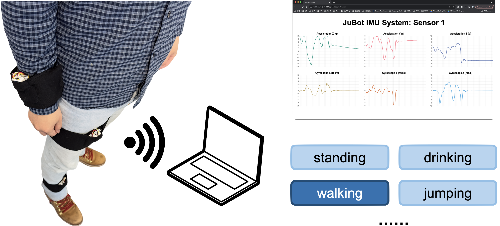

The versatile wearable sensor system is a wireless platform consisting of multiple sensor units (IMUs, other sensors) and corresponding Web-based application server (Figure 1). As the platform operates wirelessly, users can smoothly wear the sensor units and then perform HAR. Study setup takes merely 1 minute to complete. Alternatively, the sensor units can be used for quick extension of JuBot technology (e.g. Exoskeletons). All sensor units are highly synchronized (<1ms), ensuring superior dependability. On the backend, an ultra-compact and lightweight HAR deep learning model delivers real-time activity recognition, which possesses the response time of within 1ms. To support scientific research and enable highly tailored HAR (and beyond), the platform also allows users to collect their data and train ML models for specific usage: by simply clicking the button on the provided webpage, one can collect data, train and deploy state-of-the-art HAR models in 10 minutes in total (model training measured on NVIDIA A100 GPU).

Figure 1: Overview of the versatile IMU platform for human activity recognition (HAR).
The technique details of the platform are introduced in Figure 2.
Y. Zhou et al. Enhancing Efficiency in HAR Models: NAS Meets Pruning. In Proceedings of IEEE International Conference on Pervasive Computing and Communications (PerCom), 2024.
[PDF]
Y. Zhou, H. Zhaoet al. Deep Neural Network Pruning with Progressive Regularizer. In Proceedings of IEEE International Joint Conference on Neural Network (IJCNN), 2024.
[PDF]
H. Zhaoet al. Improving Human Activity
Recognition by Learnable Sparse Wavelet Layer. In Proceedings of
International Symposium on Wearable Computers (ISWC), ACM, 2022.
[PDF][Slide][Github][YouTube]
Y. Zhou, H. Zhaoet al. TinyHAR - A Lightweight
Deep Learning Model Designed for Human Activity Recognition. In
Proceedings of International Symposium on Wearable Computers
(ISWC), ACM, 2022.
[PDF][Github]